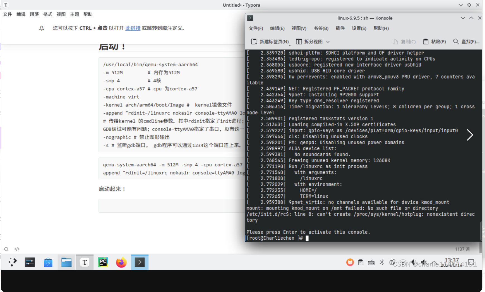
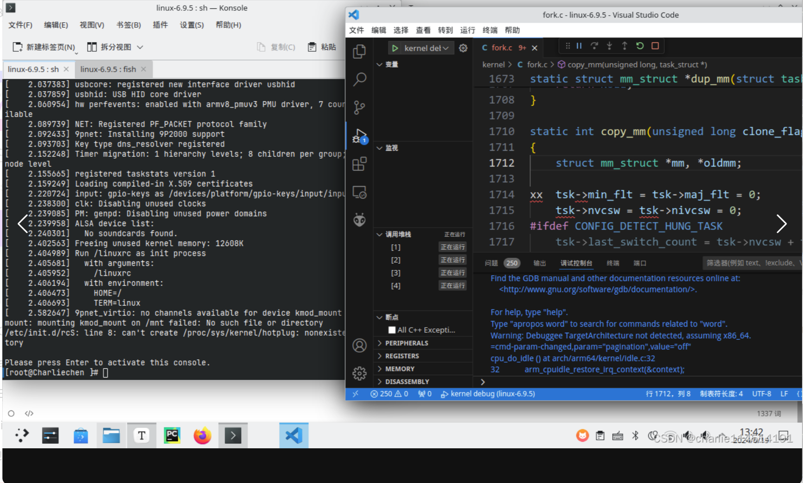
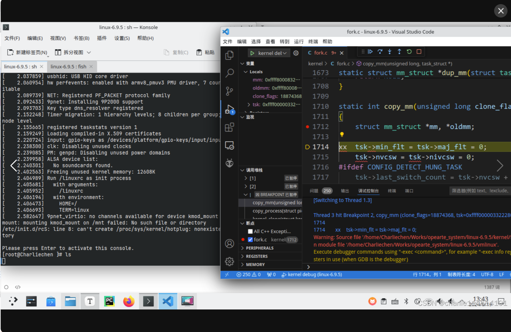

QEMU + Vscode + Arm Arch‘s Linux调试小记
QEMU + Vscode + Arm Arch‘s Linux调试小记
前几天看到了一篇讲授如何调试ARM Linux内核的文章，这里现在记录一下调试ARM Linux内核的办法
下载QEMU
对于Arch Linux用户而言，没有必要自己编译，直接上AUR源下载就行。我自己有打算研究和调试多个架构，所以我自己下载了：
yay -S qemu-full关于什么是QEMU：QEMU - ArchWiki
AUR源：Arch Linux - qemu-full 9.0.1-1 (x86_64)
如果只是想要调试ARM64位linux，需要下载的是aarch版本的。
下载完成之后，可以看看自己是否可以正常启动：
qemu-system-aarch64 --version
QEMU emulator version 9.0.1
Copyright (c) 2003-2024 Fabrice Bellard and the QEMU Project developers下载aarch64-gcc
yay -S aarch64-linux-gnu-gcc
aarch64-linux-gnu-gcc -v
Using built-in specs.
COLLECT_GCC=aarch64-linux-gnu-gcc
COLLECT_LTO_WRAPPER=/usr/lib/gcc/aarch64-linux-gnu/14.1.0/lto-wrapper
Target: aarch64-linux-gnu
Configured with: /build/aarch64-linux-gnu-gcc/src/gcc-14.1.0/configure --prefix=/usr --program-prefix=aarch64-linux-gnu- --with-local-prefix=/usr/aarch64-linux-gnu --with-sysroot=/usr/aarch64-linux-gnu --with-build-sysroot=/usr/aarch64-linux-gnu --with-native-system-header-dir=/include --libdir=/usr/lib --libexecdir=/usr/lib --target=aarch64-linux-gnu --host=x86_64-pc-linux-gnu --build=x86_64-pc-linux-gnu --disable-nls --enable-default-pie --enable-languages=c,c++,fortran --enable-shared --enable-threads=posix --with-system-zlib --with-isl --enable-__cxa_atexit --disable-libunwind-exceptions --enable-clocale=gnu --disable-libstdcxx-pch --disable-libssp --enable-gnu-unique-object --enable-linker-build-id --enable-lto --enable-plugin --enable-install-libiberty --with-linker-hash-style=gnu --enable-gnu-indirect-function --disable-multilib --disable-werror --enable-checking=release
Thread model: posix
Supported LTO compression algorithms: zlib zstd
gcc version 14.1.0 (GCC) 下载BusyBox
这个比较遗憾，因为我们是调试ARM架构的，所以文件系统的架构基础必须是ARM，否则文件系统无法识别，为此我们不得不干脏活：手动编译ARM版本的BusyBox
Downloads: Index of /downloads
busybox-1.36.1.tar.bz2: https://www.busybox.net/downloads/busybox-1.36.1.tar.bz2
下一步就是配置，好玩的是：我们需要更改一下menuconfig的文件：
你可以先尝试make menuconfig，不过马上就会给你抛错：说找不到libncurse5，其实不然，改一下shell脚本就行：
esp8266-rtos-sdk-aur-ncurses-fix.patch - aur.git - AUR Package Repositories
也就是把main改成int main就好
下一步就是：
make menuconfig
Settings --->
[*] Build static binary (no shared libs) 指定编译架构和参数
export ARCH=arm64
export CROSS_COMPILE=aarch64-linux-gnu-
make && make install我们所有的文件就会出现在源代码根目录下的_install里，下面比较麻烦——为了制作操作系统的可用文件系统，必须多加点
cd _install
mkdir etc dev lib
➜ ls
bin/ dev/ etc/ lib/ linuxrc@ sbin/ usr/下面依次创建文件：
在etc目录下：
profile
#!/bin/sh
export HOSTNAME=Charliechen
export USER=root
export HOME=/home
export PS1="[$USER@$HOSTNAME \W]\# "
PATH=/bin:/sbin:/usr/bin:/usr/sbin
LD_LIBRARY_PATH=/lib:/usr/lib:$LD_LIBRARY_PATH
export PATH LD_LIBRARY_PATHinittab
::sysinit:/etc/init.d/rcS
::respawn:-/bin/sh
::askfirst:-/bin/sh
::ctrlaltdel:/bin/umount -a -rfstab
#device mount-point type options dump fsck order
proc /proc proc defaults 0 0
tmpfs /tmp tmpfs defaults 0 0
sysfs /sys sysfs defaults 0 0
tmpfs /dev tmpfs defaults 0 0
debugfs /sys/kernel/debug debugfs defaults 0 0
kmod_mount /mnt 9p trans=virtio 0 0新建一个init.d文件夹：
里面放入文件
rcS
mkdir -p /sys
mkdir -p /tmp
mkdir -p /proc
mkdir -p /mnt
/bin/mount -a
mkdir -p /dev/pts
mount -t devpts devpts /dev/pts
echo /sbin/mdev > /proc/sys/kernel/hotplug
mdev -s改一下权限：
chmod 777 rcS- busybox 作为linuxrc启动后， 会读取/etc/profile, 这里面设置了一些环境变量和shell的属性
- 根据/etc/fstab提供的挂载信息， 进行文件系统的挂载
- busybox 会从 /etc/inittab中读取sysinit并执行， 这里sysinit指向了/etc/init.d/rcS
- /etc/init.d/rcS 中 ，mdev -s 这条命令很重要， 它会扫描/sys目录，查找字符设备和块设备，并在/dev下mknod
我们继续：在dev目录下创建console文件
cd _install/dev
sudo mknod console c 5 1拷贝aarch目录下的lib动态文件到lib目录，让动态运行文件可以执行：
cd _install/lib
cp /usr/aarch64-linux-gnu/lib/*.so* -a .编译linux 6.9.5的内核
make defconfig ARCH=arm64修改.config的这些配置：
CONFIG_DEBUG_INFO=y # 更多的调试信息
CONFIG_INITRAMFS_SOURCE="./root" # 文件系统在哪？
CONFIG_INITRAMFS_ROOT_UID=0
CONFIG_INITRAMFS_ROOT_GID=0注意，上面的信息务必是：存在则修改，不存在添加！
在Linux源码目录下添加一个root文件夹，其实这对应的是CONFIG_INITRAMFS_SOURCE的位置：
mkdir root
sudo cp -r path/to/your/busybox_source_code/_install ./root
make ARCH=arm64 Image -j8 CROSS_COMPILE=aarch64-linux-gnu-泡杯茶老铁！
启动！
/usr/local/bin/qemu-system-aarch64
-m 512M # 内存为512M
-smp 4 # 4核
-cpu cortex-a57 # cpu 为cortex-a57
-machine virt
-kernel arch/arm64/boot/Image # kernel镜像文件
-append "rdinit=/linuxrc nokaslr console=ttyAMA0 loglevel=8"
# 传给kernel 的cmdline参数。其中rdinit指定了init进程；nokaslr 禁止内核起始地址随机化，这个很重要， 否则GDB调试可能有问题；console=ttyAMA0指定了串口，没有这一步就看不到linux的输出
-nographic # 禁止图形输出
-s # 监听gdb端口， gdb程序可以通过1234这个端口连上来。
qemu-system-aarch64 -m 512M -smp 4 -cpu cortex-a57 -machine virt -kernel arch/arm64/boot/Image -append "rdinit=/linuxrc nokaslr console=ttyAMA0 loglevel=8" -nographic -s启动起来！

成功运行!
链接到vscode进行远程调试
我们在Linux源代码根目录下code .
非上位机架构需要使用gdb-multiarch来调试!
yay -S gdb-multiarch在.vscode文件处添加launch.json文件：
➜ cat .vscode/launch.json
{
// 使用 IntelliSense 了解相关属性。
// 悬停以查看现有属性的描述。
// 欲了解更多信息，请访问: https://go.microsoft.com/fwlink/?linkid=830387
"version": "0.2.0",
"configurations": [
{
"name": "kernel debug",
"type": "cppdbg",
"request": "launch",
"program": "${workspaceFolder}/vmlinux",
"cwd": "${workspaceFolder}",
"MIMode": "gdb",
"miDebuggerPath":"/usr/bin/gdb-multiarch",
"miDebuggerServerAddress": "localhost:1234"
}
]
}⏎下一步可能出错的是——没有对应版本的py，这个自信寻找aur源，我当时缺少的是python311，所以在aur源搜索python+版本号就可以出来，举个例子少python3,7搜python37就OK！
之后我们就可以顺利的启动起来了：

下一步就是——打个断点试试看：我打在了kernel/fork.c的copy_mm函数！相信大家熟悉linux内核开发的都知道这个是什么（喜）

打好断点，输入ls并且回车，就可以看到断点生效！